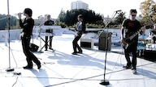

Xiph.org Test Media
Welcome to media.xiph.org, a repository for freely-redistributable test sets. This is a miscellaneous collection of videos from various contributors.
![[image thumbnail]](venuscubes.png)
|
Venus Cubes [1.67:1 | 250 frames]
This is a test animation based on the some shaders from Ken Musgrave's Texturing and Modeling: A Procedural Approach put together by Mark Beckwith. Rendered with BMRT. Source: RenderMan Repository. |
![[Impact clip poster frame]](impact.jpg)
Impact [4:3 | 739 frames] no commercial use
jpeg tar.gz 640x480 (65 MB)
ppm tar.bz2 320x240 (57 MB)
A section of a povray animation showing a comet hitting the earth's ocean.
Source: Scott Manley (original).
![[image thumbnail]](night_flight.jpg)
Night Flight [4:3 | 214 frames] no commercial use
jpeg tar.gz 640x480 (7.9 MB)
ppm tar.bz2 320x240 (20 MB)
An animated nighttime flight down a city corridor.
Source: Scott Manley (original).
![[clouds clip poster frame]](clouds-160.jpg)
Time-lapse clouds [4:3 | 96 frames]
ppm tar.bz2 320x240 (9.9 MB)
A time-lapse movie of clouds. Each frame represents 3 seconds. Needs cropping.
Source: Ralph Giles.

Breathe Out [16:9 | 5892 frames] for research use only
Download: 580x326 [ 4:2:0 y4m (1.6 GB) | 4:2:2 Quicktime (2.1 GB) | MD5 checksums ]